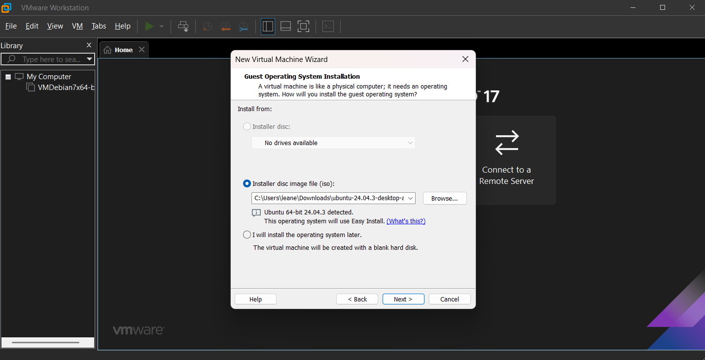
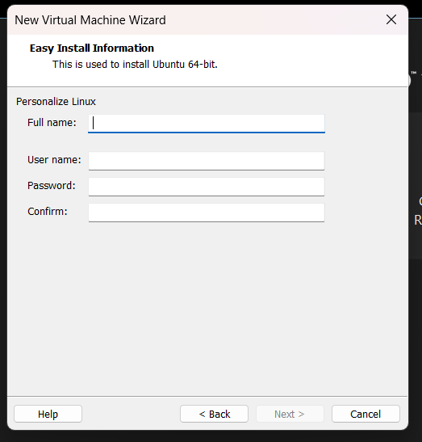
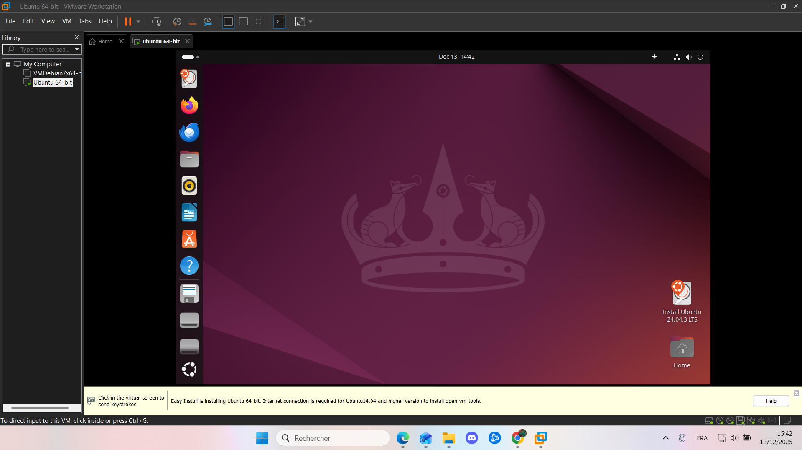

Avant d'installer une VM, vérifiez que votre PC possède au minimum 8 Go de Ram et un processeur compatible à la virtualisation
On utilise le logiciel de virtualisation VMware et Ubuntu comme distribution Linux afin d'illustrer nos propos.
Télécharger les logiciels nécessaires avant de se lancer dans la VM, ici comme on utilise Ubuntu, on télécharge Ubuntu mais dans votre cas, télécharger la distribution qui vous intéresse
Ouvrez VMWare et ajouter une nouvelle machine en mettant vos informations

Enregistrez vos données comme dans l'image ci-dessous

Patientez simplement que la machine se configure et voilà, vous avez votre VM
